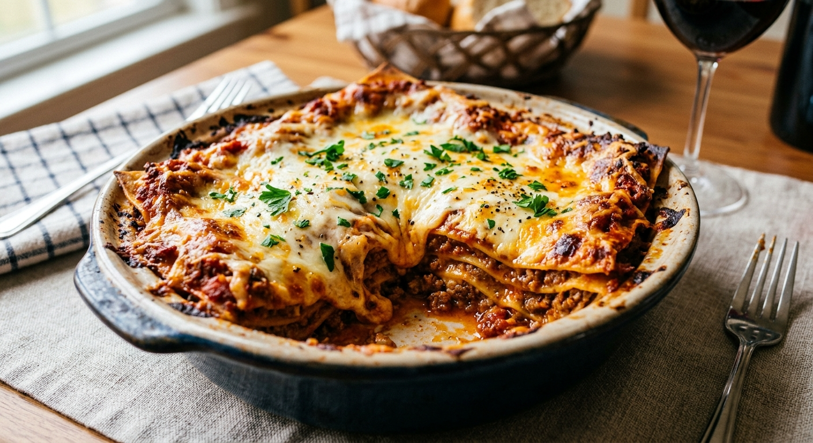
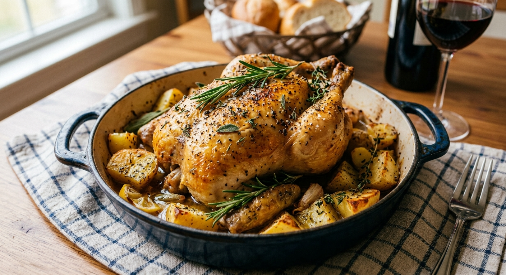
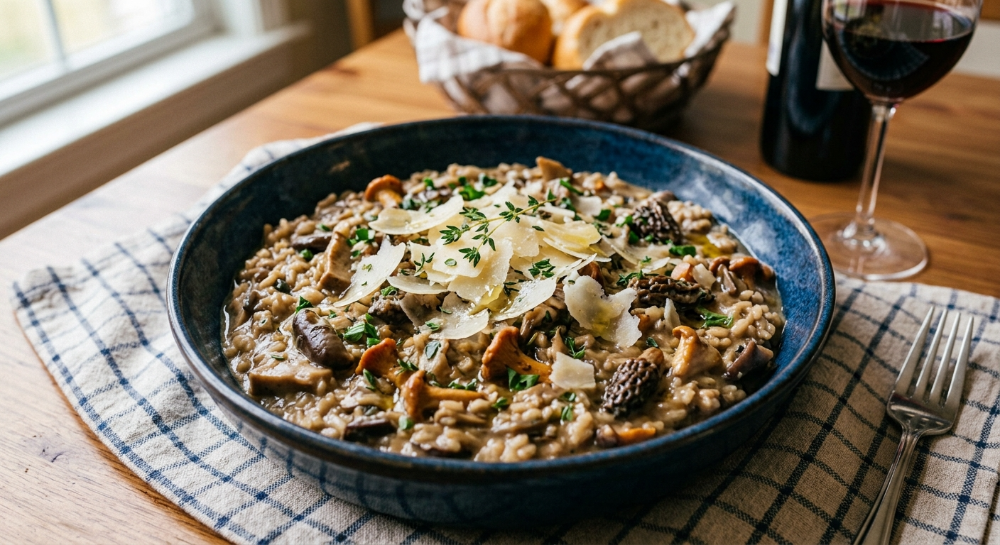

Lasaña de Carne Clásica
Una lasaña tradicional con capas de pasta, boloñesa casera y bechamel cremosa.
Descargar Receta (PDF)Una colección de los mejores platos salados para cualquier ocasión.

Una lasaña tradicional con capas de pasta, boloñesa casera y bechamel cremosa.
Descargar Receta (PDF)
Pollo jugoso asado lentamente con una mezcla de romero, tomillo y limón.
Descargar Receta (PDF)
Arroz cremoso con una variedad de setas de temporada y queso parmesano.
Descargar Receta (PDF)